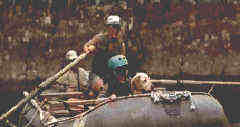

| River Wild/A-,A |
| Universal/1994/112/ANA
2.35 |
The big buzz before the release of The
River Wild was how well was Meryl Streep going to fit into the shoes of an action heroine. It's
quickly apparent that this is a non issue as the fine actress makes the most of her part a woman
battling the sedate waters of a marriage on the rocks and the wild white water of the raging
river's rapids. Streep proves her mettle under harrowing physical conditions in piecing together a
character with a strong emotional center in the midst of the high powered tension delivered up with
able skill by director Curtis Hanson.
 |
|
Streep in command. ãUniversal
|
When former white water rafting
guide Gail plans a family trip to expose her young son Rourke to the thrill of running the big
water in her home state of Montana, the natural beauty surrounding the river is not all that's in
store for them. The encounter with a dubious trio of male rafters at the outset of the rafting trip
and the last minute surprise arrival of her husband Frank are clear indications that the rocky ride
down the river will be strewn with other than natural obstacles.
While the script is tightly constructed, what sets this actioner above the
norm is precise execution of every production aspect. Led by Streep, the actors all do a splendid
job. Kevin Bacon supplies rafter on the run Wade with a combination of easy friendliness and
unpredictable explosiveness. Bacon breathes a psychotic energy into his role without going over the
top. David Strathairn is convincing as Tom, Gail's architect husband, and Joseph Mazzello follows
up his stint in Jurassic Park with another fine kid performance. Hanson proves to have a
keen sense of suspense pacing and makes excellent use of all the cards in his deck of director's
tricks. The photography of the Montana wilds is nothing short of spectacular and the action scenes
on the water are breathtaking. Director of Photography Robert Elswit proves a major asset for The
River Wild. Take note of the unusual water free lenses that present images unimpaired by the
presence of the normally ubiquitous droplets. A special device was uses that blew the water away
from the camera lens, but traveled at velocities which were not recorded on the film. The musical
score by Jerry Goldsmith, who was brought in as a late replacement, is terrific. It captures the
beauty and menace of the river and helps tie the powerful images together.
The River Wild has
been turned into a ravishing DVD. The very sharp images that played havoc with the limitations of
the laser bring the action to brilliant life in this anamorphic 2.35 transfer. The colors are
vital, saturation natural. The Dolby 5:1 surround is beautiful. Jerry Goldsmith's score, featuring
horns singing above the water, has never sounded better. And the pounding of the rushing water is
totally involving.
|
|


DVDPlanet is the DVD
incarnation of legendary laser retailer Ken Crane's. Deep discounts and serious service.

News, information, features about current films in theaters and in the
pipeline. Easy to use interface.
 
The Big Combo has
style to spare in reviewing films and producing feature articles. Check out their special
"Lingo" section.

Derek Germano of The Cinema
Laser, a one man whirlwind of reviews, just announced the posting of his 600th DVD
review .

The Feature Archive
has articles ranging from Akira
Kurosawa to Blonde Bimbos.
Movie Rage: Death in the Aisles
Everyone knows what it feels like to get angry at the
movies these days. Here's a humorous but not so delightful view of big screen misery.
|